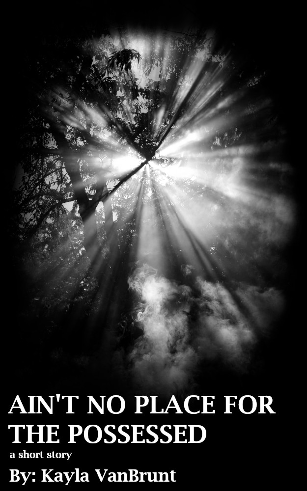
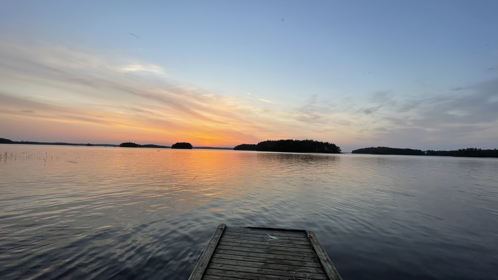

A Walk in the Finnish Woods is a piece I compiled to recreate a moment I shared with my boyfriend last December. I went to visit him in Finland for the first time, and of course it was Christmas time. There was snow everywhere, and the trees in Finland are absolutely gorgeous; they reminded me of trees that would be in a fairy forest! The one night, he and I decided to take a walk at one in the morning with his dog. And of course, we took that walk in the woods near his house. When we first headed out on our walk, we listened to music together and it felt absolutely magical, especially with a full moon! The trees were lit up from the moonlight and I just felt incredibly happy. There were times where I felt the cold starting to bother me, and eventually I complained enough that we headed back to his house. In my piece you can hear the mention of the name “Kassu”, which is the name of his dog.
To compile this piece, I decided to start off slow with the use of the wind and crunchy footsteps, where it eventually leads into a happy little beat. Of course, there are some punchy, crystalline sounds in there as well to help mimic the feeling of the bitter cold. But, luckily enough, that crystalline sound goes away and leads back into the happy little beat. This replicates the feeling I had of the cold bothering me, but then I remember just being happy to be there with him. I had used the pitch, speed, and amplify effects quite a few times throughout my piece. Along with that, I also incorporated some of my own recorded sounds. I figured since I was the person who had experienced it, I should be including some of myself in there too. Over all, the piece comes out to be two minutes and forty five seconds. I decided to keep it at this length because I didn’t want it to feel like it dragged on, but I also didn’t want it to be so short that it felt as if it were nothing at all.
The visual image I decided to create was a book cover. In my fiction writing class, I have been working on a short story called “Ain’t No Place For The Possessed”, so I decided that creating a book cover for my story would be the best thing for me.
To start off, my short story is about a young woman named Katherine who is being burned at the stake. The story goes through significant stages of her life that lead her to this unfortunate demise. The question of the story is, will Katherine be saved (by God)? In order to portray the theme and setting of the story, I went to Unsplash.com and looked through images until I found the perfect one of sunlight shining through the woods. I then went on to create the correct dimensions for a book cover (625 x 1000 pixels), and sized the image so that it fit where I wanted it to within the cover. I then sharpened the image, and changed the image to grayscale colors. After that, I went through and balanced the shadows and highlights in order to give the image that eerie yet hopeful effect, with the sunlight peeking through. The cover is supposed to provoke feelings of sadness, loss, loneliness, and hopefulness. All of these emotions are very much present in the short story, so this is why I chose to create this cover. In a more literal sense, there is light that literally peeks through the forest in the short story. To finish touching up my visual argument, I took a paintbrush and darkened the borders to keep the focus a little more on the light and the title than the surrounding trees.

In my free time, I enjoy taking photographs! Photography has always been an interest of mine, even back in high school. I have taken photographs both through a digital camera (Canon Rebel T6) and with my phone (iPhone 12 Pro Max). Fortunately, my phone has the option to capture RAW photographs, and contains 3 different back cameras. :)
